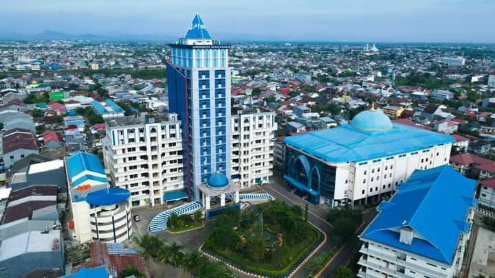

Aksi Damai Solidaritas Bela Palestina, Sivitas Akademika Unismuh Makassar Tunjukkan Contoh Demo tanpa Memacetkan Jalan
UNISMUH.AC.ID, MAKASSAR-Ribuan sivitas akademika Universitas Muhammadiyah (Unismuh) Makassar bersatu dalam Aksi Solidaritas Bela Palestina terhadap agresi militer yang dilakukan Israel. Akreditasi tersebut, merupakan bagian gerakan Aksi Bela Palestina yang dilaksanakan 172 Perguruan Tinggi Muhammadiyah Aisyiyah (PTMA) di seluruh Indonesia, yang menyerukan adanya perubahan nyata dalam kebijakan internasional dan mendesak PBB serta negara-negara besar untuk intervensi yang lebih efektif dalam konflik ini. Baca Lebih Lanjut....